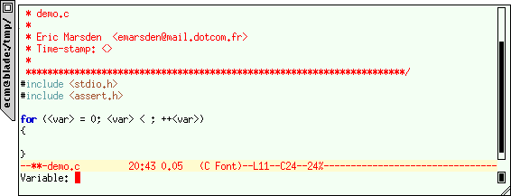

{kind=link}
![[ TABLE OF CONTENTS ]](../gx/indexnew.gif)
![[ FRONT PAGE ]](../gx/homenew.gif)


This column is devoted to making the best use of Emacs, text editor extraordinaire. Each issue I plan to present an Emacs extension which can improve your productivity, make the sun shine more brightly and the grass greener.
Documents often conform to a boilerplate: a regular structure which is boring to type in for each document. Most wordprocessors recognise this and allow you to create templates for business letters, technical reports, memos etc. Emacs can do one better than these static "skeletons", since its templating mechanism allows you to insert dynamically generated text, according to the file's name, your login, the date, or the results of a shell command.
The Emacs auto-insertion mechanism allows you to set up boilerplates which will be instanciated upon file creation, based on the new file's name or mode. For example, when you create a file called lsys.h, it will ask you Perform C / C++ header auto-insertion?, and if you say yes might insert something like
/**********************************************************************
* lsys.h
*
* Eric Marsden <emarsden@mail.dotcom.fr>
* Time-stamp: <>
**********************************************************************/
#ifndef _LSYS_H_
#define _LSYS_H_
#endif /* _LSYS_H_ */
|
Note that #ifdefs have been generated to protect against multiple inclusions of the header. You might want to add additional elements such as your company's copyright blabber, skeletal revision history comments, or an RCS version $Id. The auto-inserted content depends on the major mode: upon creation of a file called lsys.sgml the auto-inserted text might be
<!DOCTYPE ARTICLE PUBLIC "-//Davenport//DTD DocBook V3.0//EN" [
]>
<article>
<artheader>
<date>1999-03-01</date>
<title> </title>
<subtitle> </subtitle>
<author>
<firstname>Eric</firstname>
<surname>Marsden</surname>
<affiliation><orgname>CULTe</orgname></affiliation>
</author>
<authorinitials>ecm</authorinitials>
<abstract>
<para>
</para>
</abstract>
</artheader>
<sect1><title> </title>
<para>
</para>
</sect1>
</article>
|
[These font-enhanced program listings were generated by Hrvoje Niksic's excellent htmlize package, which generates HTML renderings of font-locked buffers.] Auto-insertion can be activated by saying
(add-hook 'find-file-hooks 'auto-insert)
(setq auto-insert-directory (expand-file-name "~/.autoinsert/"))
|
The autoinsert package (written by Charlie Martin) is distributed with default templates for several modes. There are two ways of customizing the auto-inserted contents: the simplest (which doesn't require any knowledge of elisp) involves placing files in the directory ~/.autoinsert/ and registering them with autoinsert:
(define-auto-insert "\\.html\\'" "autoinsert.html")
|
The "\\.html\\'" is a regular expression which matches filenames ending in .html (note the use of \\' to match the end of a string, rather than $ for the end of a line, since filenames are allowed to contain newline characters). This should lead to the contents of the file ~/.autoinsert/autoinsert.html being inserted automatically when you create a file whose name ends in .html. This method only allows insertion of static content. Insertion of dynamically generated content is also possible if you know some Emacs Lisp; here is some code which creates skeleton C or C++ headers, as in the first example in this article:
;; autoinsert.el
(define-auto-insert
(cons "\\.\\([Hh]\\)\\'" "My C / C++ header")
'(nil
"/*" (make-string 69 ?*) "\n"
" * " (file-name-nondirectory buffer-file-name) "\n"
" *\n"
" * " (user-full-name) " <" user-mail-address ">\n"
" * Time-stamp: <>\n"
" *" (make-string 69 ?*) "*/\n"
(let* ((noext (substring buffer-file-name 0 (match-beginning 0)))
(nopath (file-name-nondirectory noext))
(ident (concat "_" (upcase nopath) "_H_")))
(concat "#ifndef " ident "\n"
"#define " ident "\n\n\n"
"\n\n#endif /* " ident " */\n"))))
|
How does the autoinsertion work? Each time you open a file in Emacs, it runs a special hook called find-file-hooks. This is where things such as enabling syntactic highlighting or checking whether a file is under a version control system (RCS or CVS) occur. The add-hook line above latches the autoinsertion onto this hook.
The Dynamic Macro package by Wayne Mesard allows you
to insert structured text at any time, not only at document creation
time. dmacro provides facilities such as prompting the user for input,
inserting the contents of a file or the output from a shell command,
and positioning the cursor or the mark after the insertion. One
particularly nice feature is the ability to indent autoinserted
contents according to the current mode. It could be used as a way of
enforcing (well, encouraging developers to adhere to) coding standards,
and can reduce development time by preventing typos in repetitive text.
dmacro is not distributed with Emacs; you will have to download and
install it (which is just a matter of saying
(require 'dmacro) ; dynamic macros
(dmacro-load "~/elisp/ecm.dm")
|
The dmacro package is very well documented, so I will only provide a few motivating examples. Here is one which will insert the skeleton of a for block in C-mode (macros can either be global, or specific to a certain major mode):
# file ~/elisp/ecm.dm
# ================================== Stuff for C-derived modes =======
# MODE: c-mode c++-mode java-mode
ifor indent interactive for statement (prompts for variable name)
for (~(prompt var "Variable: ") = 0; ~prompt < ~@; ~prompt++)
{
~mark
}
#
|
You activate the macro by typing C-c d ifor (with tab completion on the macro's name). It should prompt you for the name of the variable:

and the result should look like this. The next example demonstrates how to insert a timestamp of the form -ecm1999-02-29 in the current buffer (pet peeve: given the value of a uniform, standardized external representation for dates, I make a point of systematically using the ISO 8601 format). You invoke this macro by typing C-c d dstamp. The corresponding code (which also demonstrates the use of an alias to factorize out commonly used definitions) is:
# ALIAS: iso-date (eval (format-time-string "%Y-%m-%d"))
# ================================= Stuff for all modes ============
# MODE: nil
dstamp expand user id and date
-~user-id~(iso-date)
#
|
There are several other packages which provide similar functionality to dmacro. tempo.el (included with both GNU Emacs and XEmacs) was originally written as an adjunct to html-helper-mode, providing facilities for inserting balanced bits of HTML markup, but can be used for other purposes. It is also possible to extend the standard abbrev mechanism to insert dynamically generated text by hacking the abbrev-mode-hook, as explained in the following message posted anonymously to gnu.emacs.help. Finally, there is template.el by Christoph Wedler which seems very comprehensive.
The January 1999 EMACSulation on abbreviation mechanisms had a bootstrap problem: I indicated how to create abbreviations and how to have them read in automatically when Emacs starts up, but the instructions that I gave weren't sufficient to get Emacs to save abbrevs automatically when quitting. Thanks to Nat Makarevitch and Dave Bennet for pointing this out. Here is a revised version of the code that I proposed (the last line is what was missing):
;; if there is an abbrev file, read it in
(if (file-exists-p abbrev-file-name)
(read-abbrev-file))
(setq-default save-abbrevs t)
|
A few European readers also asked about abbreviations containing 8bit, non-ASCII characters. In its default state Emacs won't take them into account, since it assumes that characters with the 8th bit set are non word-constituent. To modify this (to take into account accented characters in the iso-8859-1 character map, for example) you need to do something like
(set-language-environment 'Latin-1) ; GNU Emacs 20.x
(require 'iso-syntax) ; GNU Emacs 19.x
|
(there are major differences between the way that GNU Emacs 19.x and 20.x handle different character encodings; recent versions can handle multibyte characters, required for representing asian languages. Rather than using Unicode, Emacs uses adjustable width characters. For XEmacs this MULE (MULtilingual enhancements for Emacs) support is a compile-time option in recent versions.)
Next month we'll look at spell checking with Emacs. Thanks to Jean-Christophe Arnu for commenting on
a draft of this article. Don't hesitate to contact me with comments,
corrections or suggestions (what's your favorite
couldn't-do-without Emacs extension package?). C-u 1000 M-x
hail-emacs !
PS: Emacs isn't in any way limited to Linux, since implementations exist for many other operating systems (and some systems which only halfway operate). However, as one of the leading bits of free software, one of the most powerful, complex and customizable, I feel it has its place in the Linux Gazette.
EMACSulation #1: Handling Compressed Files, February 1998
EMACSulation #2: Internet Ready, March 1998
EMACSulation #3: Ediff, April 1998
EMACSulation #4: Emacs as a Server, June 1998
EMACSulation #5: Customizing Emacs, August 1998
EMACSulation #6: Saving Time, January 1999